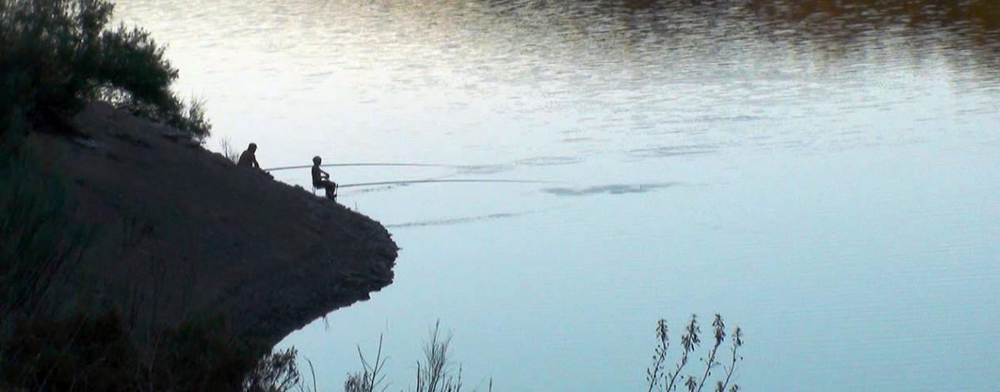

En esta pagina vamos a hablar de la pesca contintental en la comunidad de Jaén. En la comunidad de Jaén podemos contemplar varios terrenos donde podemos disfrutar de esta actividad: pantanos, rios, emblases... .

También debemos de saber que hay varios tipos de pesca que se pueden practicar. En esta pagina vamos a hablar en especial de tres de todos las modalidades de pesca que podemos practicar, esos son: Carpfishing, pesca del Black Bass y pesca al coup.